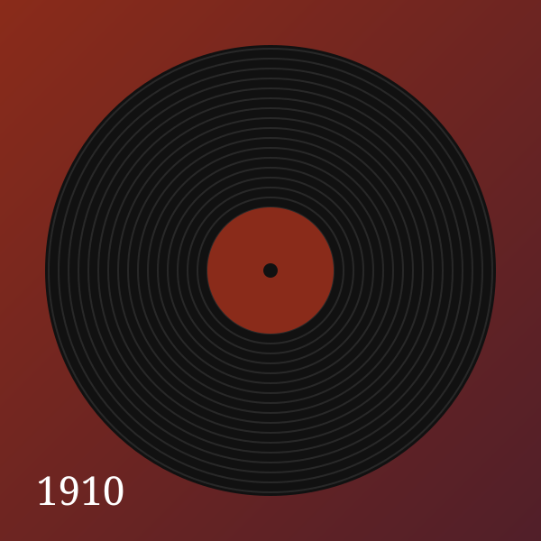

Tashjian Brothers, “Tartzial Paylets” (Columbia E658/4964, 1910)

Background: Houshamadyan's Armenian-language Sassoun collection publishes a song titled “Դարձեալ փայլեց” (“It Shone Again”) in the Alahaydoyan collection. The text describes a freedom flag raised over Sassoun, calls for aid to the homeland, names Gurgen, Vahan, Hrayr Tzhokhk and Andranik in the mountains of Dalvorik, describes an order from the Sultan's palace to destroy the fedayi positions, and includes the explicit cry “Ժամանակն է վրեժ լուծել” (“It is time to take revenge”). The closing stanza describes gunfire from Armenian positions and enemy casualties.
Proposed role: Collective resistance / retaliation / armed defence